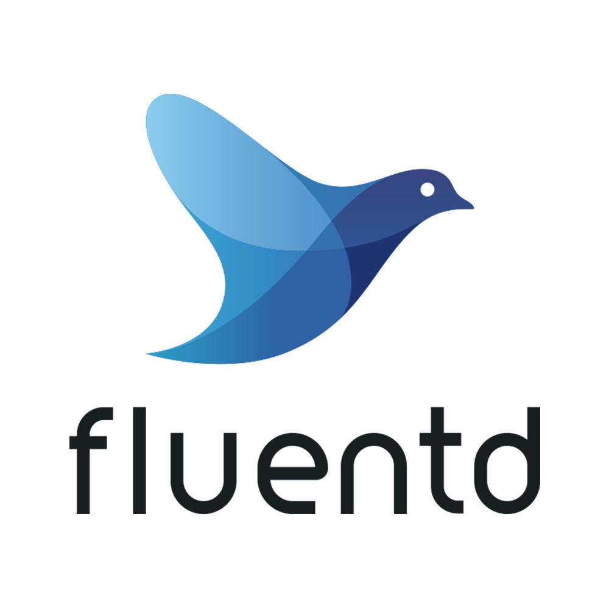

class: center, middle # Observability workshop by Development Excellence 2019 --- # Agenda - Extremely short intro - Logging (EFK stack) - Metrics (Prometheus) - Visualization (Kibana & Grafana) - Get shit done --- # Extremely short intro 3 pillars of observability ![][blackboxwhitebox] --- # Logging (EFK stack) Kubernetes logging - Elasticsearch - Fluentd - Kibana # Fluentd - DaemonSet deployed across all k8s nodes - Configured to scrape stdout from pods - Sends logs to AWS Elasticsearch  --- # Structured logs - Better indexing (i.e. searchable) ```json { "@t": "2019-11-05T20:14:06.5854967Z", "@mt": "{HostingRequestFinishedLog:l}", "@r": [ "Request finished in 91.331ms 200 application/json; charset=utf-8" ], "ElapsedMilliseconds": 91.331, "StatusCode": 200, "ContentType": "application/json; charset=utf-8", "HostingRequestFinishedLog": "Request finished in 91.331ms 200 application/json; charset=utf-8", "EventId": { "Id": 2 }, "SourceContext": "Microsoft.AspNetCore.Hosting.Internal.WebHost", "RequestId": "0HLR166DH9GKF:00000001", "RequestPath": "/api/v1/adsync", "CorrelationId": null, "ConnectionId": "0HLR166DH9GKF" } ``` --- # Structured logs - Query pod logs ```bash kubectl logs $POD --tail=X | \ jq '.RequestPath, .RequestId, .StatusCode' ``` --- # Logging - High dimensionality insights - Great for debugging e.g. exceptions - Allows for some statistics (i.e. dashboards, alerts) - It's **NOT** a tool for critical business metrics - Extremely cost inefficient - 3 months retention - Overhead scales with traffic --- # Metrics (Prometheus) <img style="float: center; width: 700px;" src="prometheus.jpeg"> --- # Metrics - Example of metrics [selfservice frontend](https://build.dfds.cloud/metrics) - Subscribe for metrics scrape ```yaml # service.yaml metadata: labels: scrape_metrics_enable: "true" spec: ports: - name: metrics port: 8080 targetPort: 8080 ``` OBS: Remember to expose the port in the deployment too! --- # RED metrics - Request rate - Error rate - Duration of requests RED metrics are really effective for alerting. --- # Metrics - Low dimensionality (it's just a float64 with labels) - Ideal for statistics producing alerts and dashboards - Cost effective - Overhead do not scale with traffic - 1 months retention (not guaranteed) - PromQL steep learning curve (but worth it!) --- # Visualization - [Grafana](https://grafana.hellman.oxygen.dfds.cloud/selfservice-herald-vbqkr/d/zSG7f34Wz/selfservice?orgId=1&refresh=10s&from=now-12h&to=now) (metrics) - [Kibana](log.dfds.cloud) (logs) --- # Get shit done - [.NET Prometheus library](https://github.com/prometheus-net/prometheus-net) - [Monitoring playbook](https://playbooks.dfds.cloud/getting-started/monitoring.html) --- # Get shit done - TODOooooOOOOO - [ ] Install Tiller and Grafana - [ ] See Traefik metrics (requires service ingress) - [ ] Implement application HTTP metrics server - [ ] Implement RED metrics dashboard - [ ] Test alerts --- class: center, middle # ?"Questiones" amigos? [blackboxwhitebox]: blackbox_vs_whitebox.png [prometheus]: prometheus.jpeg